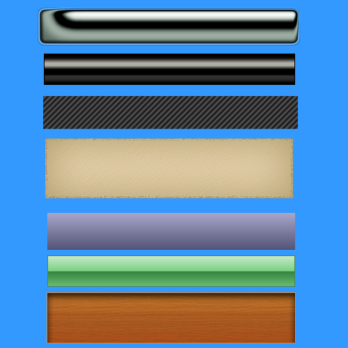

Assignment004Cb
Create the following seven shapes using the same style shown below. On the Menu, click Window and select Styles to access the Styles panel. Select the appropriate styles category to style your shape.
 Right-click the image and view the properties to determine your canvas size! Use the following styles.
Right-click the image and view the properties to determine your canvas size! Use the following styles.
- Rectangle 1 - Chrome Styles
- Rectangle 2 - Dark Chrome Styles
- Rectangle 3 - Diagonals Styles
- Rectangle 4 - Old Paper Styles
- Rectangle 5 - Pastels Styles
- Rectangle 6 - Plastic Styles
- Rectangle 7 - Wood Styles
